What Makes a Hit Song?
Tools Used:Microsoft SQL Server, Excel, Tableau
In this project, I embarked on a captivating journey through data analysis and visualization, leveraging my skills in SQL, Excel, and Tableau to uncover the hidden stories within Spotify's top-streamed songs of 2023. The final dashboard and associated links to this project are included at the end.
Key Question: What makes a hit song?
We are using data of the top streamed songs on Spotify of 2023 from Kaggle.
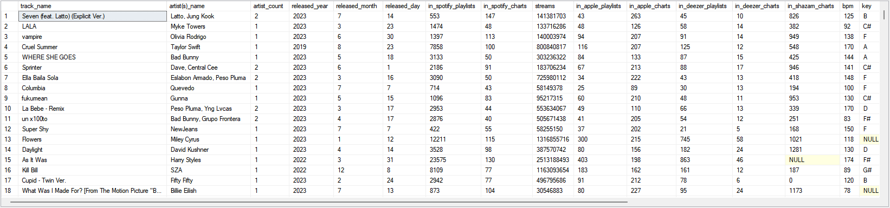I first started by importing the data into Microsoft SQL Server. I then got started on my queries. I first wanted to see which artists are behind the most tracks in the dataset. However, many songs have multiple artists, who are named all in the same column. Before I can count up all the artists, I first need to extract all of the artists out of the artist(s)_name column. I first attempt to do this by using PARSENAME. However, I run into trouble because PARSENAME has an extract limit of four, and the maximum number of artists for one song in the dataset is eight. Additionally, there are a couple of artists in the dataset with periods in their name, which would not allow the PARSENAME function to extract as I want. My solution to this is to create a custom function that can extract the artists without limit. The following custom function does as such. It also allows me to input my own delimeter, so I don't need to use REPLACE like I would with PARSENAME, and the function will still be able to extract artists with periods in their name properly.
CREATE FUNCTION dbo.CustomPARSENAME (
@String NVARCHAR(MAX),
@Delimiter CHAR(1),
@Part INT
)
RETURNS NVARCHAR(MAX)
AS
BEGIN
DECLARE @Result NVARCHAR(MAX)
DECLARE @DelimiterCount INT
-- Initialize variables
SET @Result = NULL -- Initialize to NULL
SET @DelimiterCount = 0
-- Loop through the string
WHILE LEN(@String) > 0
BEGIN
SET @DelimiterCount = @DelimiterCount + 1
DECLARE @NextDelimiterPosition INT
SET @NextDelimiterPosition = CHARINDEX(@Delimiter, @String)
IF @NextDelimiterPosition > 0
BEGIN
-- Found a delimiter, extract the part if it matches the requested part number
IF @DelimiterCount = @Part
SET @Result = SUBSTRING(@String, 1, @NextDelimiterPosition - 1)
-- Remove the extracted part and delimiter from the string
SET @String = SUBSTRING(@String, @NextDelimiterPosition + 1, LEN(@String) - @NextDelimiterPosition)
END
ELSE
BEGIN
-- No more delimiters, treat the whole string as the last part if it matches the requested part number
IF @DelimiterCount = @Part
SET @Result = @String
-- Exit the loop
BREAK
END
END
RETURN @Result
END
Now I can use this custom function, dbo.CustomPARSENAME(), to extract each artist out of the artist(s)_name column.
SELECT
track_name,
[artist(s)_name],
artist_count,
dbo.CustomPARSENAME([artist(s)_name], ', ', 8) AS artist_8,
dbo.CustomPARSENAME([artist(s)_name], ', ', 7) AS artist_7,
dbo.CustomPARSENAME([artist(s)_name], ', ', 6) AS artist_6,
dbo.CustomPARSENAME([artist(s)_name], ', ', 5) AS artist_5,
dbo.CustomPARSENAME([artist(s)_name], ', ', 4) AS artist_4,
dbo.CustomPARSENAME([artist(s)_name], ', ', 3) AS artist_3,
dbo.CustomPARSENAME([artist(s)_name], ', ', 2) AS artist_2,
dbo.CustomPARSENAME([artist(s)_name], ', ', 1) AS artist_1
FROM ['spotify-2023$']
I now need to get all these extracted artists into one column so that I can count them up. I do this by creating a CTE with the previous output and using UNION ALL to stack the eight coulumns on top of each other. I noticed that there were some trailing spaces in the artist names, so I also TRIM the artist names. And of course, we have to remove all of the nulls. I use COUNT and GROUP BY to count how many times each artist appears in the dataset, and I have SQL return the results to me in descending order of number of appearances.
WITH SplitArtistsCTE AS
(
SELECT
track_name,
[artist(s)_name],
artist_count,
dbo.CustomPARSENAME([artist(s)_name], ', ', 8) AS artist_8,
dbo.CustomPARSENAME([artist(s)_name], ', ', 7) AS artist_7,
dbo.CustomPARSENAME([artist(s)_name], ', ', 6) AS artist_6,
dbo.CustomPARSENAME([artist(s)_name], ', ', 5) AS artist_5,
dbo.CustomPARSENAME([artist(s)_name], ', ', 4) AS artist_4,
dbo.CustomPARSENAME([artist(s)_name], ', ', 3) AS artist_3,
dbo.CustomPARSENAME([artist(s)_name], ', ', 2) AS artist_2,
dbo.CustomPARSENAME([artist(s)_name], ', ', 1) AS artist_1
FROM ['spotify-2023$']
)
SELECT
LTRIM(RTRIM(artist_1)) AS trimmed_artist,
COUNT(artist_1) AS artist_count
FROM
(
SELECT artist_1
FROM SplitArtistsCTE
UNION ALL
SELECT artist_2
FROM SplitArtistsCTE
UNION ALL
SELECT artist_3
FROM SplitArtistsCTE
UNION ALL
SELECT artist_4
FROM SplitArtistsCTE
UNION ALL
SELECT artist_5
FROM SplitArtistsCTE
UNION ALL
SELECT artist_6
FROM SplitArtistsCTE
UNION ALL
SELECT artist_7
FROM SplitArtistsCTE
UNION ALL
SELECT artist_8
FROM SplitArtistsCTE
) AS artist_list
WHERE artist_1 IS NOT NULL
GROUP BY LTRIM(RTRIM(artist_1))
ORDER BY artist_count DESC
This gives us the following result:
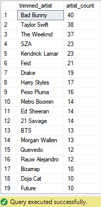I put this output into Excel and use that as a data source for Tableau to create a bar chart to show the artists behind the most tracks in the top streamed songs on Spotify of 2023. I decided to only include the top 10 in my visual. I also utilize a lollipop bar chart design to take after the Spotify track scrubber.
We get the following visual in the end.
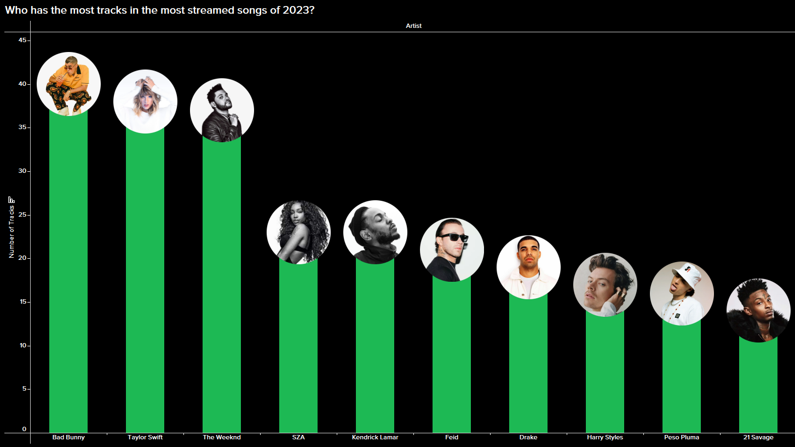Next I wanted to analyze whether there are any patterns in the release dates of popular songs. The release date in the dataset is given as integers in three separate columns: year, month (1-12), day (1-31). In my query, I want to pull the release date into one column in date format. I achieve this with CAST and CONVERT. Along with the date, I pull the track name, artist(s), and number of streams. I also only pull the top 100 tracks based on number of streams so we only look at trends with the most popular songs.
SELECT
TOP 100 track_name,
[artist(s)_name],
streams,
CAST(CONVERT(NVARCHAR(4), [released_year]) + '-' +
RIGHT('0' + CONVERT(NVARCHAR(2), [released_month]), 2) + '-' +
RIGHT('0' + CONVERT(NVARCHAR(2), [released_day]), 2) AS DATE) AS release_date
FROM ['spotify-2023$']
ORDER BY streams DESC
This query returns the following result:
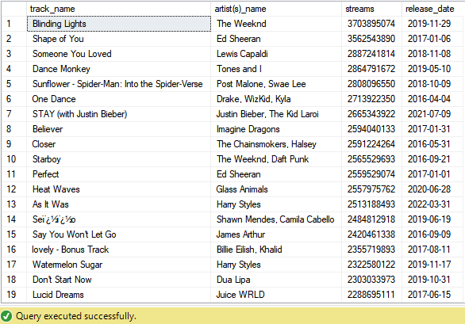I did not end up including this in my final dashboard, but visualizing this with Tableau gets us the following result:
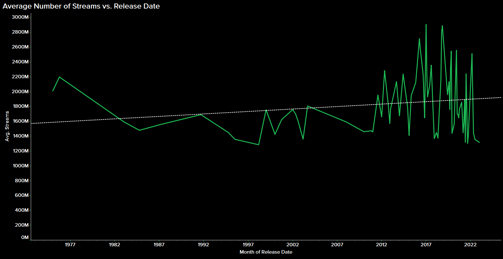Though older songs may have had more time to accumulate streams, we see a preference for newer songs.
Next I wanted to find any correlations between song characteristics (e.g. danceability, valence, energy) and the number of streams. I write the following query to get the relevant data needed:
SELECT
track_name,
[artist(s)_name],
streams,
bpm,
[key]+' '+mode AS key_mode,
[danceability_%],
[energy_%],
[acousticness_%],
[instrumentalness_%],
[liveness_%],
[speechiness_%]
FROM ['spotify-2023$']
ORDER BY streams DESC
This query gives us the following output:
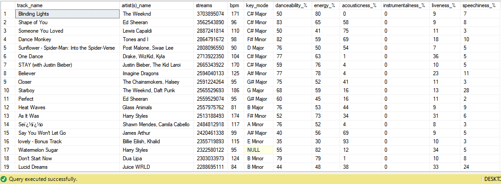I use this data to create scatter plots to visualize number of streams vs. each of the song characteristics, wth trend lines included.
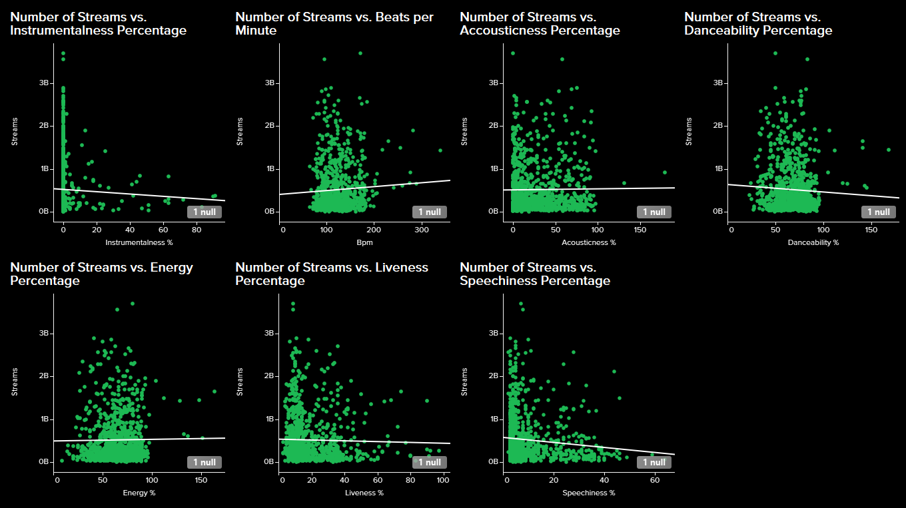Next, I wanted to look at the impact of playlists and charts across several platforms on the number of Spotify streams. I write the following query to pull the relevant data needed:
SELECT
track_name,
[artist(s)_name],
streams,
in_spotify_playlists,
in_spotify_charts,
in_apple_playlists,
in_apple_charts,
in_deezer_playlists,
in_deezer_charts,
in_shazam_charts
FROM ['spotify-2023$']
ORDER BY streams DESC
Running this query gives us the following output:
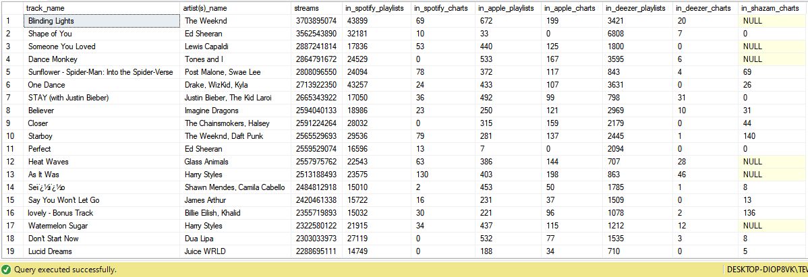I then use Tableau to create scatter plots to show and compare the impact of being in playlists and charts across different platforms on the number of Spotify streams.
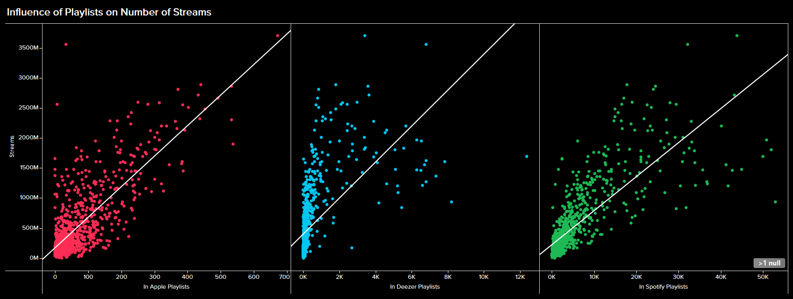 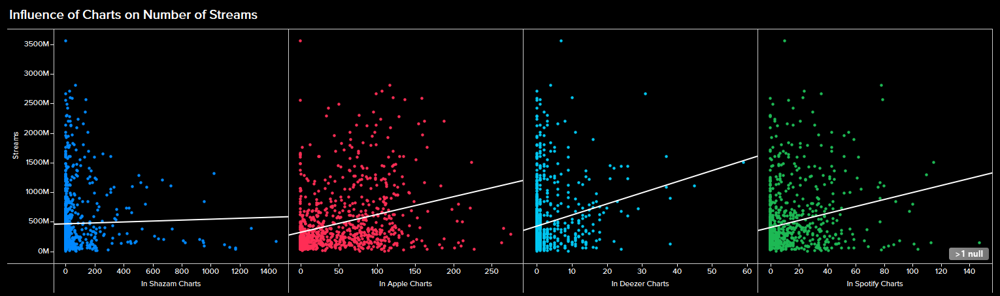Finally, I wanted to create histograms to visualize the distributions of audio features like BPM and song key. The dataset had two columns for key (i.e. A, A#, B etc.) and mode (major vs. minor), but I wanted to combine these two to simply show the keys as "A Major", for example. I write a query to pull the data needed for these histograms, and to combine the key and mode columns.
SELECT
track_name,
[artist(s)_name],
streams,
bpm,
[key]+' '+mode AS key_mode
FROM ['spotify-2023$']
This query gives us the following result:
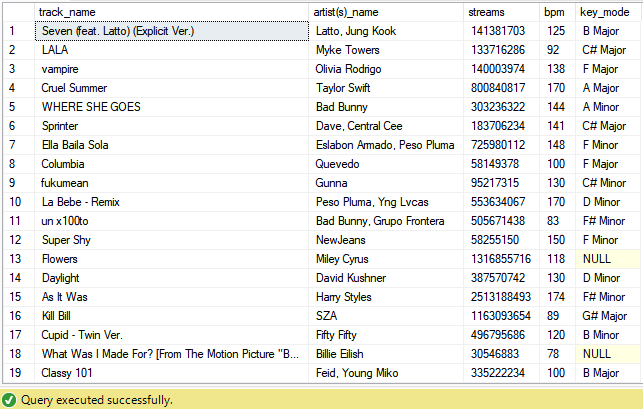Tableau helps us create a histogram to show the distribution of top songs streamed on Spotify of 2023 across different beats per minute (bpm), and across different keys. Since the key "histogram" is technically just a bar chart, I can make make the key histogram take after the Spotify scrubber as well.
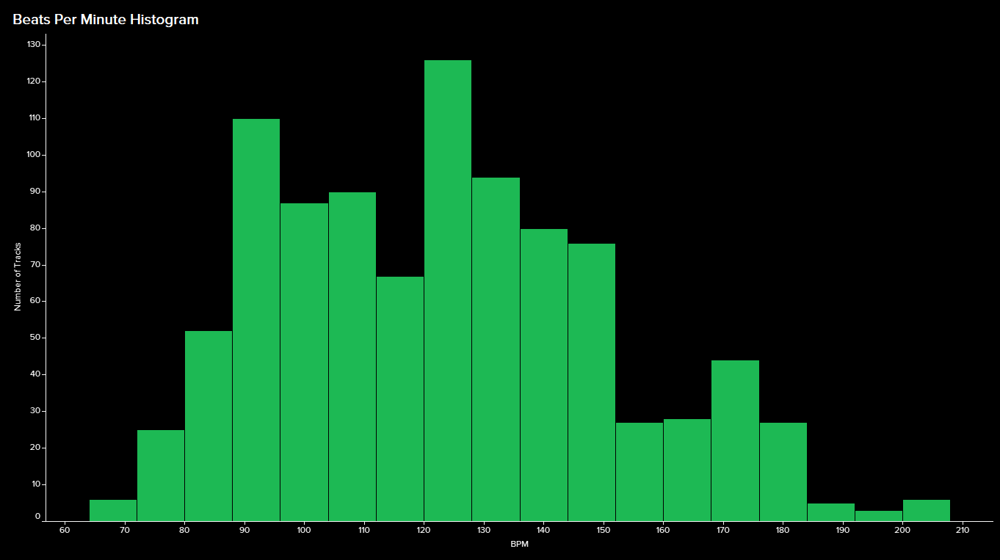 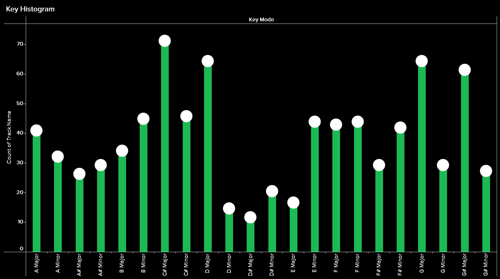So, what makes a hit song? If we are to go by the implications of this data, surprisingly, a song that not too danceable. An energetic song in C# major and between 120 and 127 bpm. A song that has vocal content but at the same time is not too speechy. A studio recorded song with some acoustic instruments. Being in people's playlists and getting onto music streaming charts helps. Oh, and it doesn't hurt to have Bad Bunny in there either.
Finally, we can throw all of the visualizations together into one dashboard:

Thank you for reading until the end. Here are the associated links with this project: